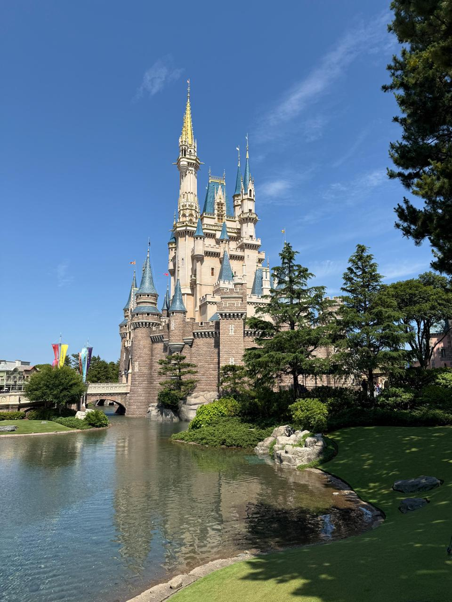
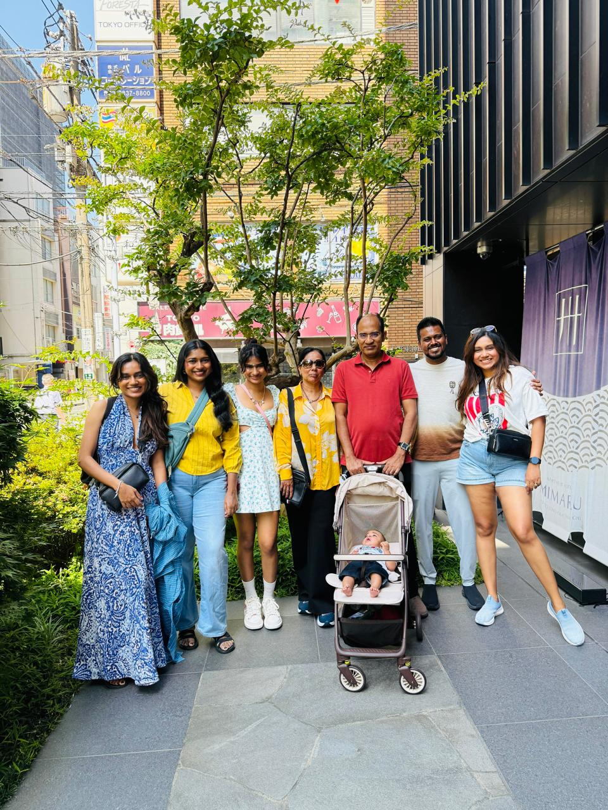
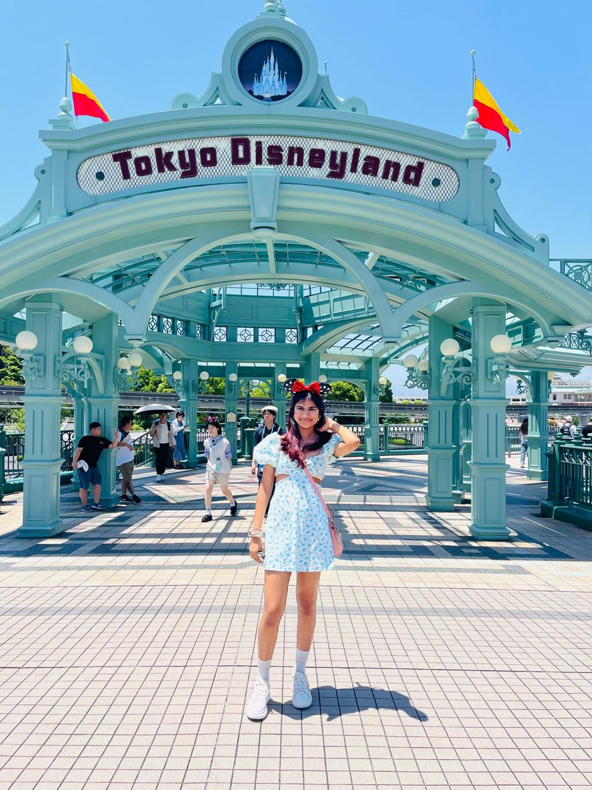
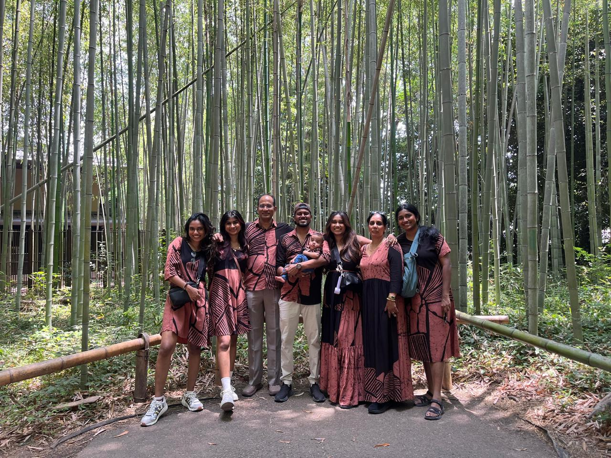
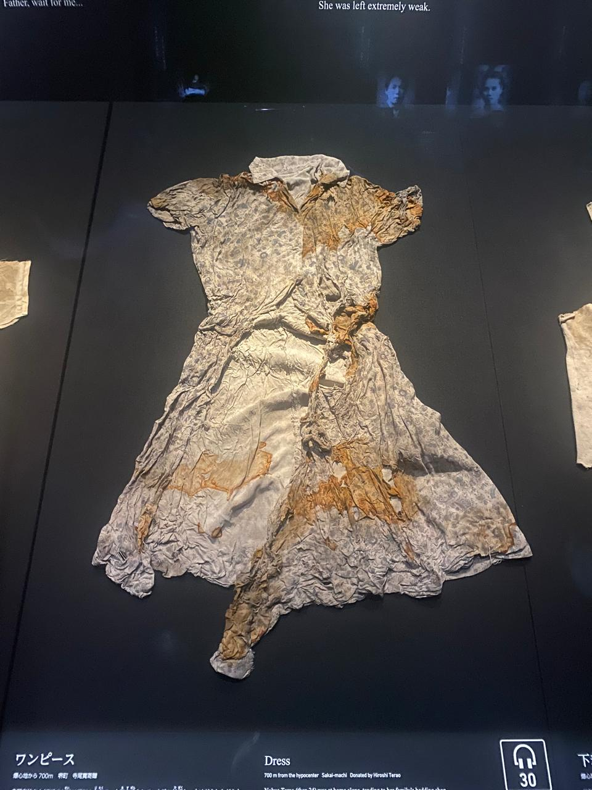
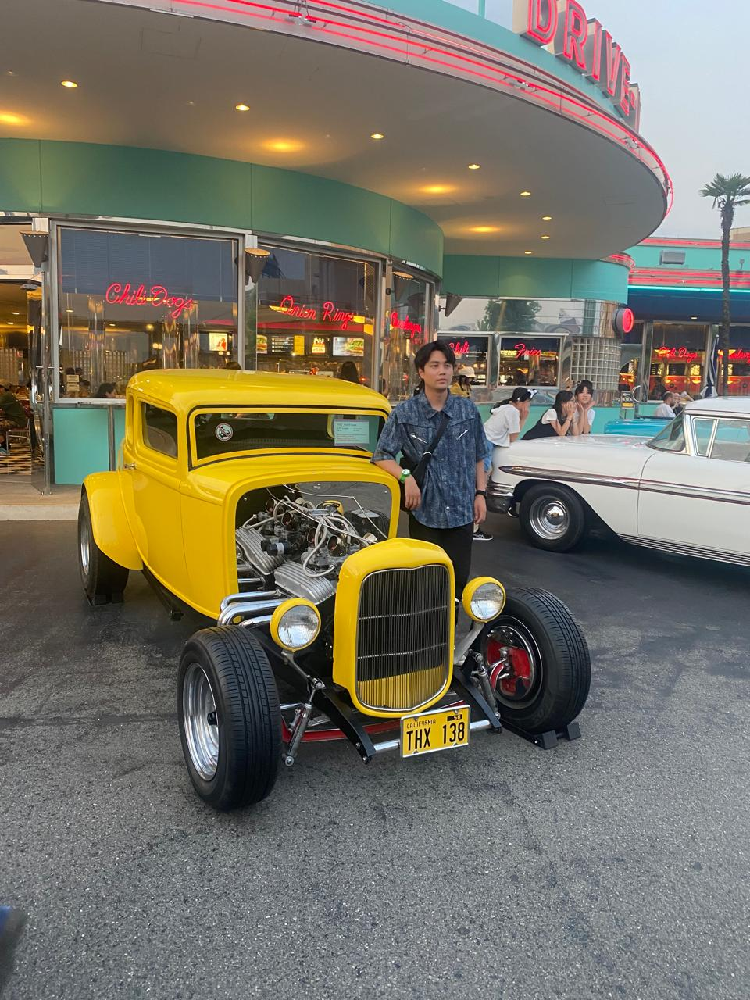

Out of the countries mentioned above my favourite is Japan. The reason why i love japan is because it has everything to do and try. Japan has lot of sights for tourists to visit and see. The cities i have visited in Japan are Tokyo, Kyoto, Osaka and Hiroshima. Places to visit in Tokyo are Senso-ji Temple(Asakusa), Shibuya Crossing and Sky, Meiji Jingu Shrine, Tokyo Skytree, teamLab Planets, Tokyo Tower, Harajuku street, Shinjuku, Ginza city, Team lab planets and Disneyland.Among these my favourite in Disneyland. I loved trying all the adventurous rides and fancy food items. Team lab planets is inspired by the theme planets.It mainly consists of three types such as forest, water and the earth. It is such a mezmerising experience. Shibuya crossing is the world largest crossing and it is one of the places with largest population. Ginza city can be considered as one of the streets with expensive brands with extreme luxury. Places to visit in Osaka are Dotonbori street, Universal studios, Umeda Sky building, Katsuo-ji Temple, Shinsaibashu-suji Shopping Street.Kyoto is the heart of traditional Japan, is renowed for its 1600+ Buddhist temples, 400+ Shinto shrines, and stunning gardens. Top iconic attractions in Kyoto are Fushimi Inari Taisha, Kinkaku-Ji(The Golden Pavilion), Arashiyama Bamboo Grove, Nishiki Market, Hozugawa river cruise. Arashiyama Bamboo Grove is a breathtaking, surreal walking path surrounded by towering bamboo stalks. One of the best spots to capture photos and pose. Nishiki Market knows as Kyoto's kitchen offers local delicacies, including fresh seafood, japanese sweets and speciality kitchen knives.Nishiki Market was one of my favourites beacause it had different types of food items. The famous food in japanese cousine are Sushi and sashimi, miso, ramen, soufle pancakes, okonomiyaki, Donburi etc. Sashimi is raw fish. Ramen are noodles in a broth often flavoured with miso or soy sauce. Donburi is a rice bowl with various toppings. Okonomiyaki is a savoury Japanese pizza or pancake with various ingredients popular in Osaka. Furthermore, Hiroshima, a modern city on Japan’s Honshu Island, was largely destroyed by an atomic bomb during World War II. Today, Hiroshima Peace Memorial Park commemorates the 1945 event. In the park are the ruins of Genbaku Dome, one of the few buildings that was left standing near ground zero. Other prominent sites include Shukkei-en, a formal Japanese garden, and Hiroshima Castle, a fortress surrounded by a moat and a park. The premier museum in Hiroshima is the Hiroshima Peace Memorial Museum, located in Peace Memorial Park, which documents the 1945 atomic bombing with personal belongings, artifacts, and survivor testimonies. It attracts millions of visitors annually for its educational, albeit emotionally intense, exhibits. Hiroshima National Peace Memorial Hall located near the museum, this is a place for quiet reflection and remembering the victims. Famous food in Hiroshima are Okonomiyaki, anago meshi and the juiciest and plumpest oysters. However japan is also a country for anime fans. It has lots of anime shops, games etc. Japan is definitely a country anyone should visit anyday.





